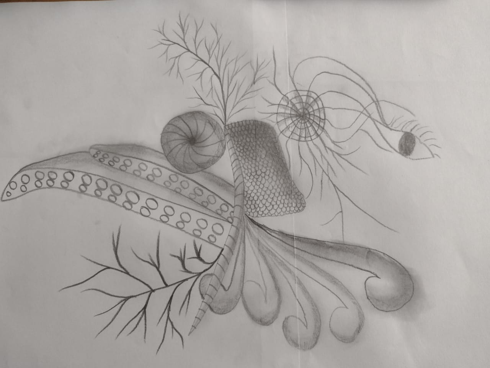
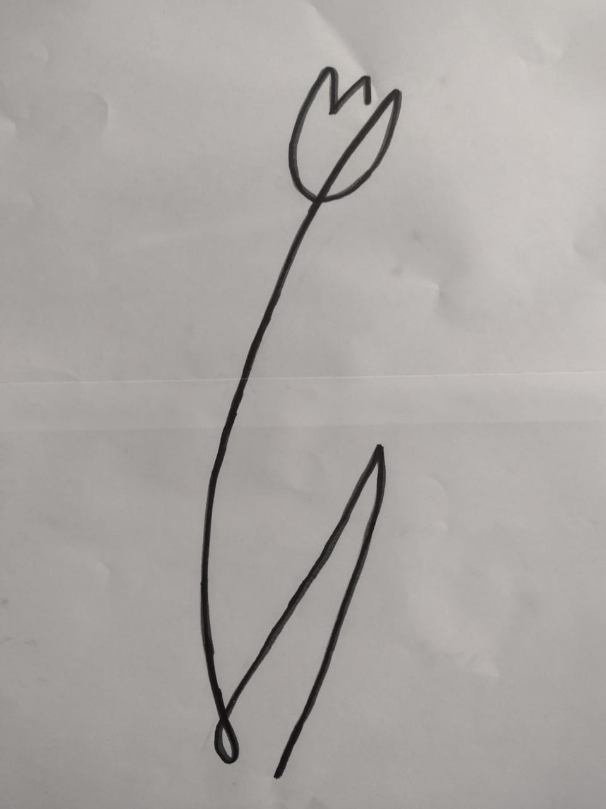
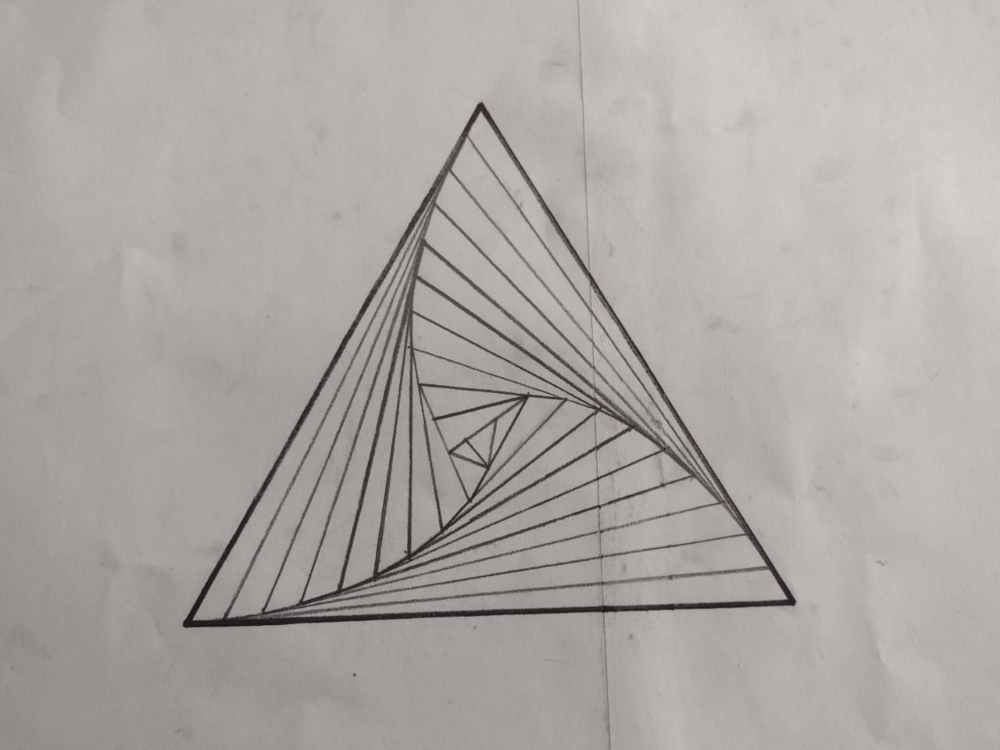
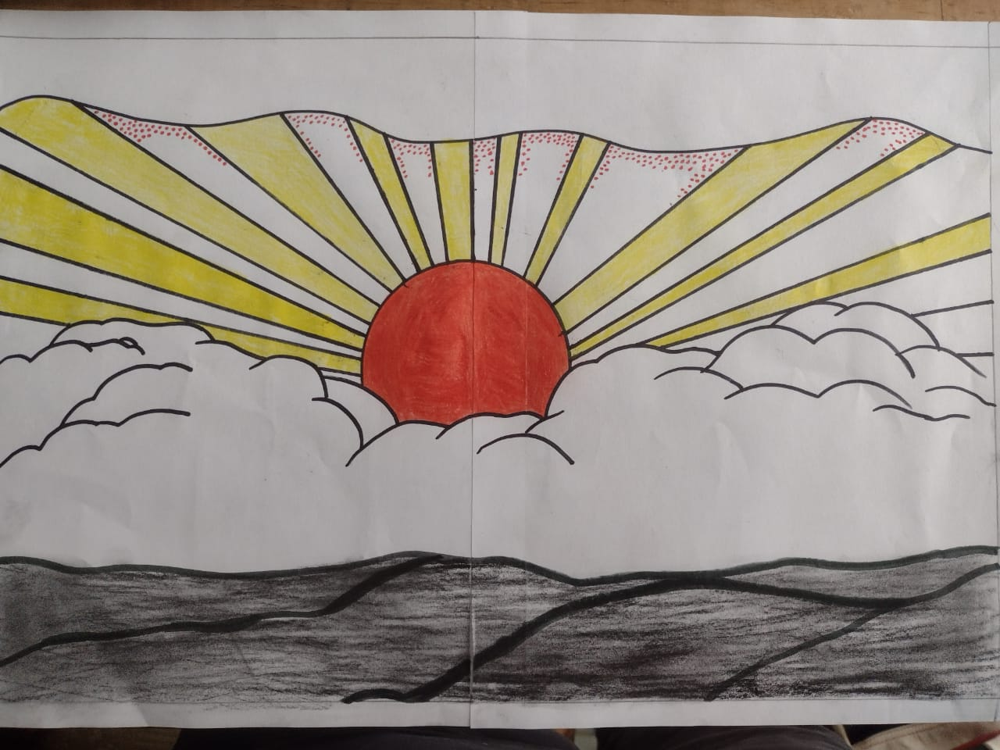
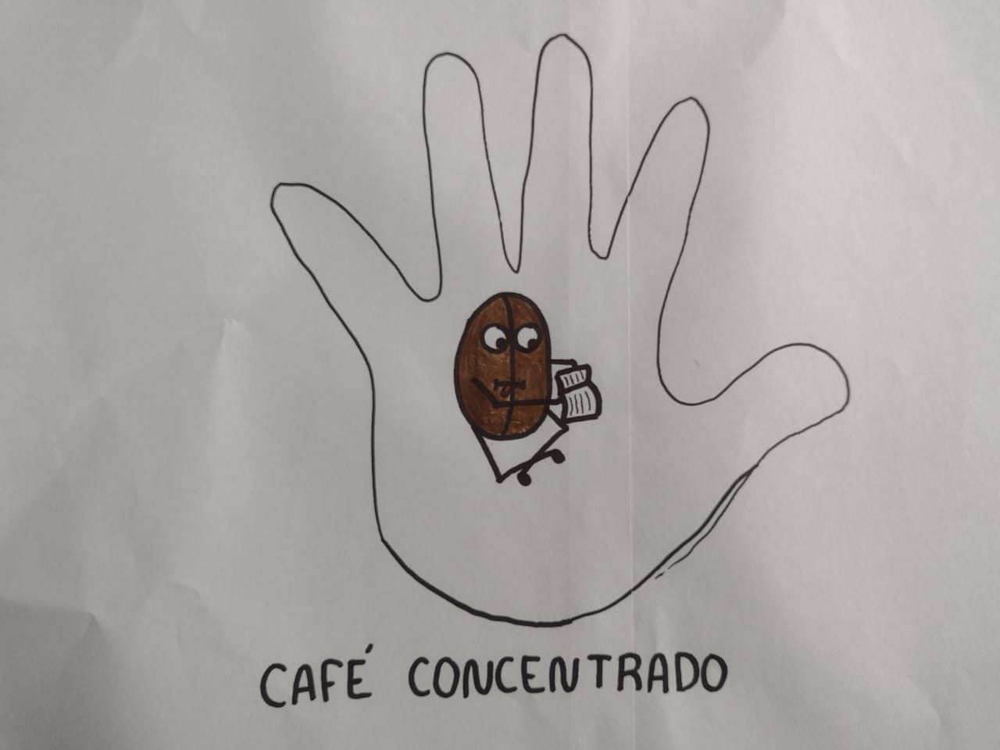

En las artes, el maximalismo es el gusto estético del exceso, que nació en repuesta a la corriente artística opuesta, el minimalismo. Es una tendencia la cual busca implementar la filosofía contraria al minimalismo, en donde se hace uso de la frase “Más es más” para hacer uso de cualquier textura, color, forma, prenda o detalle para generar un caos organizado.
|  | Cuando hice esta obra estaba dejando ir mi mano, lo unico que pensaba era que no todo tiene que ser hermoso para ser bueno, solamente tiene que expresar lo que estoy sintiendo, o lo que mi cuerpo desee expresar sin que mi consciente lo sepa necesariamente. |
En su ámbito más general, es la tendencia a reducir a lo esencial, a despojar de elementos sobrantes. También se utiliza para describir una tendencia en el diseño y la arquitectura, donde la estructura se reduce a sus elementos necesarios. El diseño minimalista ha sido muy influenciado por el diseño tradicional japonés y la arquitectura.
|  | Este tipo de dibujos usualmente son elaborados a un solo trazo, por lo que, este dibujo demuestra que no se necesita ser algo muy detallado, o muy vistoso para ser significativo, pues se nota claramente que la esencia de la rosa ahí está. |
El arte cinético describe una corriente artística caracterizada por obras que tienen o simulan movimiento. De esta manera, muchas de estas obras se piensan para interactuar con elementos que logren ese efecto de movimiento.
|  | En esta obra podemos observar como la unión adecuada de lo que cualquiera llamaría "Simples lineas" puede formar una ilusión de sombra, de movimiento o de un objeto de mas de dos dimensiones, y en este caso vemos a este trianguo el cual pareciera tener un agujero en el centro el cual, formando una especie de espiral se dirige hacia adentro de este triangulo. |
Arte pop es un movimiento artístico surgido en Reino Unido y Estados Unidos a mediados del siglo XX, inspirado en la estética de la vida cotidiana y los bienes de consumo de la época, tales como anuncios publicitarios, comic books, objetos culturales
|  | En este dibujo se muestra un amanecer muy hermoso, en donde conforme va saliendo el sol las nubes se van quitando poco a poco, para dejar ver la belleza del sol esto mismo ha sido exagerado y remarcado para que sean mas evidentes y atractivos estos detalles que se quieren mostrar al publico. |
El arte conceptual es un movimiento artístico en el que la conceptualización o la idea, es más importante que la obra de arte en tanto objeto físico o material.
|  | En este tipo de arte lo que se intenta precisamente es demostrar la idea detrás de la obra, pues en esta especificamente, lo que se intenta es hacer referencia a un chiste, pues podemos ver a un café el cual está leyendo un libro (concentrado), esto hace referencia a cuando a veces podemos tomar un café muy cargado, es decir con una alta concentración de café por lo que se le llamaría también café concentrado, la mano representaría como es que en cualquier momento tenemos la capacidad de concentrarse en nuestras manos, así como de ocurrencias de este tipo. |